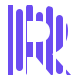

Concept 09 · Waveform R
字母的轮廓，就是声音的包络
先建立完整的大写 R，再以七根不同高度的音频柱填充。这里没有“字母旁边的声波”：拿走波形，R 本身也会消失。

Favicon / web mark小尺寸辨识度
竖向波形柱在缩小时仍保留 R 的外轮廓。
16
24
32
64
Optical scale
R 的识别完整外轮廓保证品牌首字母成立。
波形的识别七根独立音频柱构成内部节奏。
同一个资产字标首字母与 favicon 完全一致。